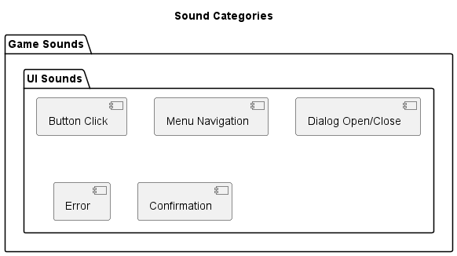

Sound Manager Module
This module contains the SoundManager class that handles audio playback, including background music, sound effects, and user interface sounds throughout the Property Tycoon game.
Key Features
Audio Playback: Management of all game sounds and music
Volume Control: Adjustable volume for music and sound effects
Sound Categories: Organization of sounds by type and context
Audio Caching: Efficient loading and reuse of audio resources
Event-based Sound Triggering: Integration with game events
Spatial Audio: Position-based sound for board elements
Muting Options: Individual control for different sound categories
SoundManager Class
The SoundManager class encapsulates audio management functionality:
@enduml
Sound Loading System
The module implements a sound loading system:
![@startuml
title Sound Loading System
start
:Initialize SoundManager;
:Configure Audio System;
note right
Set up mixer with
correct settings
end note
:Define Sound Categories;
note right
UI, Game Events,
Ambient, Notifications
end note
repeat
:Load Sound Resource;
if (Sound Already Loaded?) then (Yes)
:Use Cached Sound;
else (No)
:Load Sound from File;
if (Loading Successful?) then (Yes)
:Add Sound to Cache;
else (No)
:Log Error;
:Use Silent Sound;
endif
endif
repeat while (More Sounds?) is (Yes)
repeat
:Load Music Resource;
if (Music Already Loaded?) then (Yes)
:Use Cached Music;
else (No)
:Load Music from File;
if (Loading Successful?) then (Yes)
:Add Music to Cache;
else (No)
:Log Error;
endif
endif
repeat while (More Music?) is (Yes)
:Apply Default Volumes;
:All Audio Loaded;
stop
@enduml](../_images/plantuml-28aa90e6742f1514b6129dad0a8be4b7f41a2cb8.png)
Sound Categories
The module organizes sounds into different categories:

- package “Game Event Sounds” as Events {
[Dice Roll] [Player Movement] [Property Purchase] [Rent Payment] [Card Draw] [Auction] [Go To Jail] [House Build] [Hotel Build]
- package “Ambient Sounds” as Ambient {
[Background Ambience] [Property Group Effects] [Game Start/End]
- package “Notification Sounds” as Notifications {
[Alert] [Success] [Failure] [Player Turn] [Special Event]
- package “Music” as Music {
[Main Menu] [Game Background] [Auction Theme] [Victory Theme] [Defeat Theme]
- class SoundManager {
+play_sound(sound_name) +play_music(music_name)
SoundManager –> UI : manages SoundManager –> Events : manages SoundManager –> Ambient : manages SoundManager –> Notifications : manages SoundManager –> Music : manages
@enduml
Sound Playback System
The module implements a sound playback system:
![@startuml
title Sound Playback System
start
:Receive Sound Play Request;
:Get Sound Name and Parameters;
if (Sound Muted?) then (Yes)
:Return Without Playing;
else (No)
:Look Up Sound in Cache;
if (Sound Found?) then (Yes)
:Calculate Adjusted Volume;
note right
Base volume × sound category
volume × master volume
end note
:Determine Sound Channel;
if (Force Single Instance?) then (Yes)
:Stop Previous Instances;
endif
:Play Sound with Parameters;
if (Tracking Needed?) then (Yes)
:Store Sound Reference;
endif
else (No)
:Log Missing Sound;
endif
endif
stop
@enduml](../_images/plantuml-6705596a150c64541770b582fdead80adf67a3df.png)
Music System
The module handles background music playback:
![@startuml
title Music System
start
:Receive Music Play Request;
if (Music Muted?) then (Yes)
:Return Without Playing;
else (No)
if (Music Already Playing?) then (Yes)
if (Same Music?) then (Yes)
:Continue Current Music;
stop
else (No)
:Fade Out Current Music;
endif
endif
:Look Up New Music;
if (Music Found?) then (Yes)
:Set Music Volume;
:Play Music with Parameters;
note right
Parameters include:
- Loop count
- Fade-in time
- Start position
end note
:Update Current Music Reference;
else (No)
:Log Missing Music;
endif
endif
stop
@enduml](../_images/plantuml-c89d2bce53251ca578187beb698bfb529dc72bb1.png)
Volume Control
The module provides volume control functionality:
![@startuml
title Volume Control System
start
:Receive Volume Change Request;
if (Volume Type?) then (Sound Effects)
:Validate New Sound Volume;
:Set Sound Volume Value;
:Apply to Active Sound Channels;
:Save Sound Volume Setting;
else if (Volume Type?) then (Music)
:Validate New Music Volume;
:Set Music Volume Value;
:Apply to Music Channel;
:Save Music Volume Setting;
else if (Volume Type?) then (Master)
:Validate New Master Volume;
:Set Master Volume Value;
:Scale All Sound Channels;
:Scale Music Channel;
:Save Master Volume Setting;
endif
:Notify UI of Volume Change;
stop
@enduml](../_images/plantuml-b3cbf40e9f0e2b816f5ff4a3fdb8ca949c26eccc.png)
Game Integration
The SoundManager integrates with game events:
- class Game {
-sound_manager : SoundManager +handle_events() +notify_sound_event(event_type)
- class GameEventHandler {
+process_events() +handle_click(position)
- class UI {
-sound_manager : SoundManager +handle_button_click(button_name) +play_ui_sound(action)
- class GameLogic {
+roll_dice() +move_player(player, steps) +handle_property_landing(player, property)
Game *– SoundManager Game –> SoundManager : triggers sounds GameEventHandler –> SoundManager : triggers UI sounds UI –> SoundManager : triggers UI sounds GameLogic –> SoundManager : triggers game sounds
@enduml
Sound Event Mapping
The module maps game events to sound effects:
- class SoundManager {
-sound_event_map : Dict +play_game_sound(event_type, parameters)
SoundManager –> Mapping : uses
@enduml
Performance Considerations
The module implements several performance optimizations:
Audio Caching: Sounds are loaded once and reused to avoid repeated disk access
Sound Pooling: Sound channels are reused for similar sound types
Prioritization: Critical game sounds take precedence over ambient sounds
Distance-based Volume: Sounds can be attenuated based on virtual distance in the game
Streaming: Large audio files (like music) are streamed rather than loaded entirely into memory
Format Optimization: Audio files use appropriate compression formats for their purpose
Lazy Loading: Sounds are loaded only when needed, particularly for rarely used effects